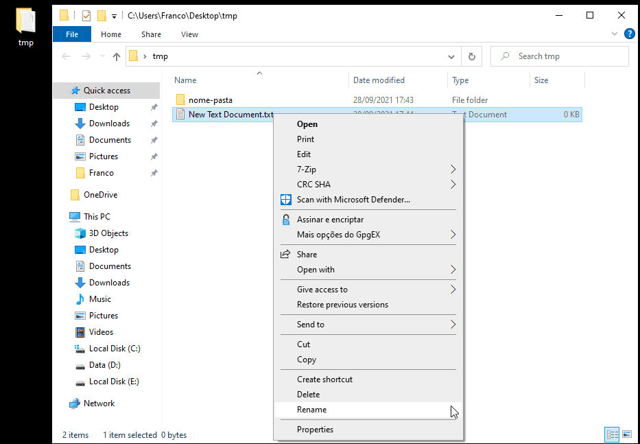
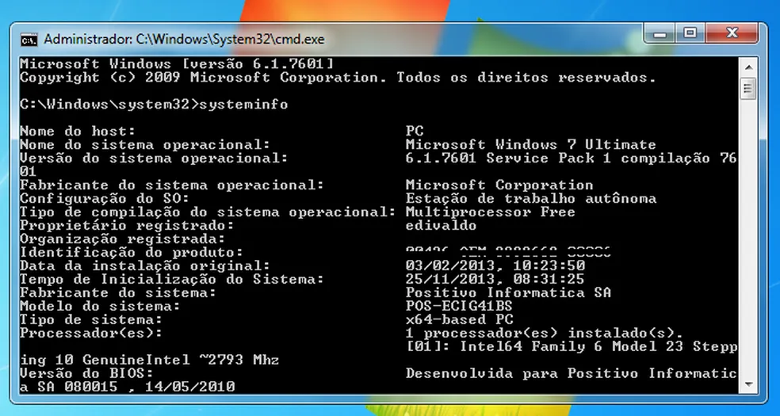
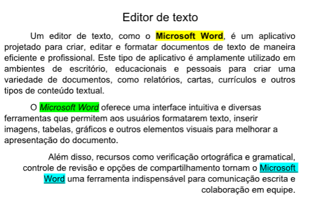
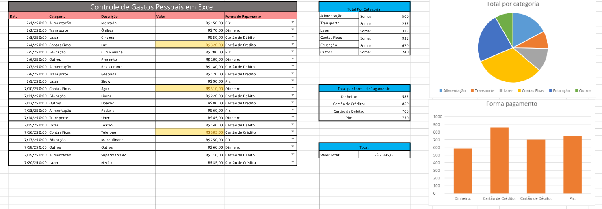
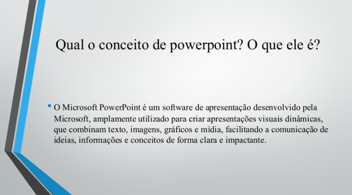

.png)
Introdução:
A informática é composta por diversos elementos que trabalham em conjunto para garantir o funcionamento de um computador. Entre eles estão o hardware, que representa as partes físicas da máquina, e o software, que inclui sistemas operacionais e aplicativos usados no dia a dia. A organização dos arquivos, o uso de programas de escritório e o entendimento dos principais componentes, como placa-mãe, processador e memória RAM, são essenciais para compreender como os computadores operam e como utilizá-los de forma eficiente.
O que é o Hardware de computadores? O que é placa mãe? Processador? e memória principal (RAM)?
Hardware é toda a parte física do computador — aquilo que você pode tocar, como peças internas e dispositivos externos.
*Placa-mãe: é a placa principal do computador. Ela conecta e permite a comunicação entre todos os componentes, como processador, memória, armazenamento e periféricos.
*Processador (CPU): é o cérebro do computador. Ele executa instruções, faz cálculos e controla todas as operações do sistema.
*Memória RAM: é a memória principal usada pelo computador para armazenar dados temporários enquanto programas estão sendo executados. Quanto mais RAM, mais tarefas podem ser feitas ao mesmo tempo.

O que é um sistema operacional?
Um sistema operacional (SO) é o software fundamental que administra o hardware, gerencia programas, organiza arquivos e fornece a interface para o usuário interagir com o computador.
Exemplos de Sistemas Operacionais:
*Windows
*Linux
*macOS
*Android

O que é o sistema de arquivos? Como funciona em modo texto (cmd) e modo gráfico (explorer)?
O sistema de arquivos é a forma como o computador organiza e armazena dados no disco (pastas, arquivos, nomes, permissões etc.).
*Modo texto (CMD): o usuário navega entre pastas e executa comandos digitando instruções, como dir, cd, copy, del. É mais direto e permite automações.
*Modo gráfico (Explorer): usa janelas, ícones e pastas visuais para acessar arquivos. O usuário arrasta, clica e usa menus para organizar e gerenciar dados.


O que é software de escritório?
Software de escritório é um conjunto de programas usados para criar documentos, planilhas, apresentações e outras tarefas administrativas.
Exemplos e aplicações:
*Microsoft Word: criação e edição de textos, relatórios, cartas, trabalhos.
*Microsoft Excel: criação de planilhas, cálculos, gráficos, tabelas e análises de dados.
*Microsoft PowerPoint: criação de slides, apresentações e materiais visuais.



Navegação: